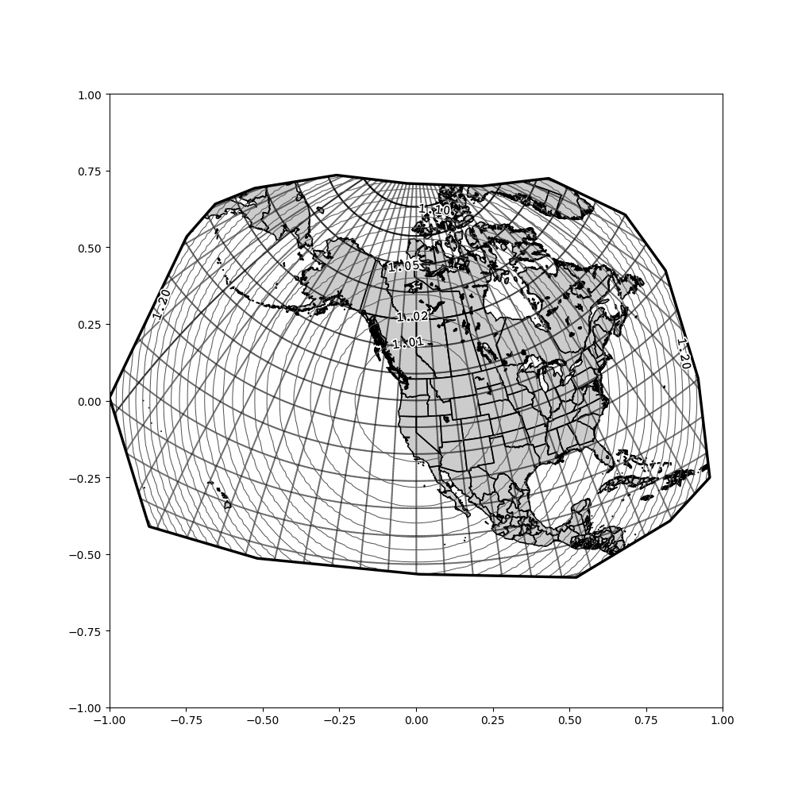
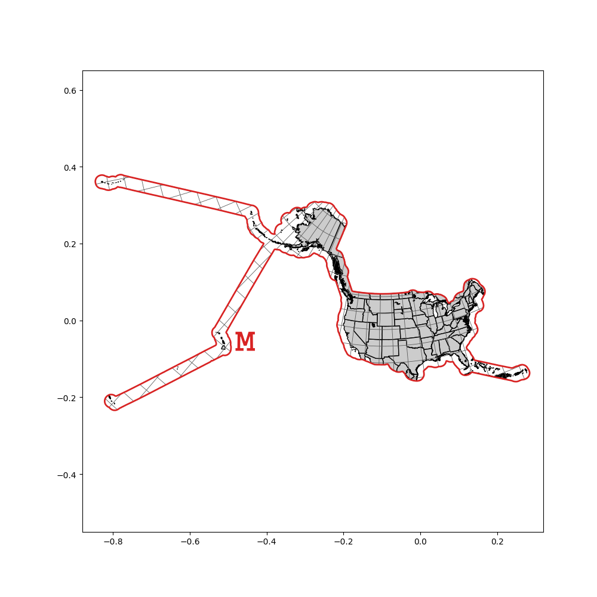
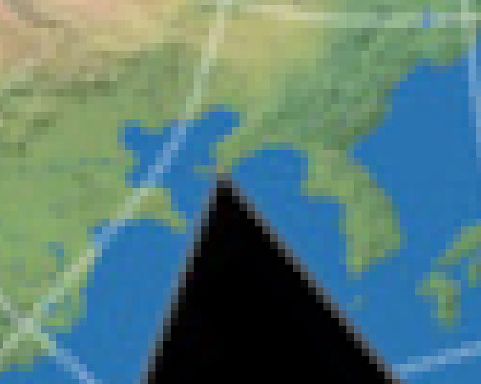
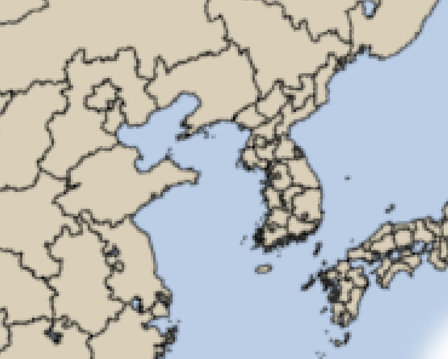
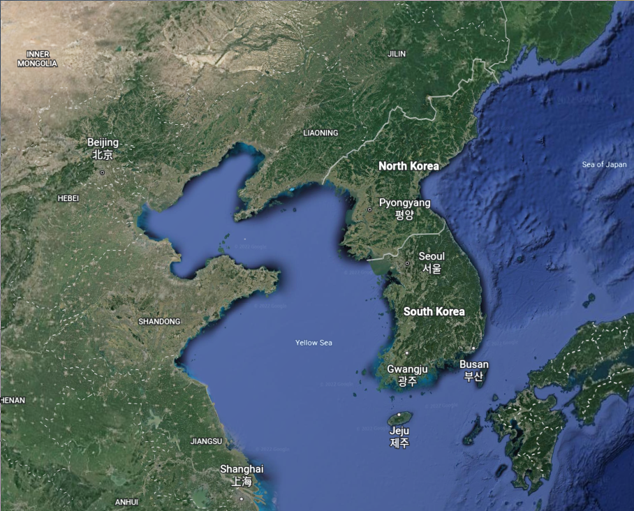

In 2020 I wrote
an article discussing how to minimize the distortion of shape in an equal-area rectangular projection. In other words, I started with a map projection that does not distort area and modified it to minimize how much it distorts shapes and angles, using a more precise mathematical definition. In that article, I contrasted these equal-area projections with the Mercator Projection, a conformal projection, which preserves shape while allowing area to be distorted. This year, I've come up with a way to do the reverse: Starting with a conformal projection and minimizing the distortion of area without losing the preservation of shapes.
Definitions
Before I begin, I need to introduce some terms that are somewhat interchangable here but have distinct meanings:
- Conformal Maps — functions that preserve angle
- Holomorphic Functions — complex functions that have a derivative everywhere
- Analytic Functions — functions that are locally defined by a convergent power series
In mathematics, a Conformal Map is a function from one surface to another which preserves angles on that surface. An example is a stereographic projection from a sphere to a plane, which allows you to create a map of the Earth's surface that preserves angles everywhere, excluding a single point:

A stereographic projection from a sphere to a plane below it. The north pole is said to be mapped to the "point at infinity".
For mappings between two 2D planes, Conformal Maps correspond to Holomorphic Functions of the complex plane, with holomorphic functions being complex functions that are differentiable in a neighborhood around every point in the complex plane. The reason for this is essentially that the derivative of a complex function describes how it affects the space around a given input point, with the magnitude of the derivative corresponding to how much that space is scaled up, and the argument (essentially the angle of a complex number in polar notation) corresponding to how much the space around the point is rotated. An important theorem within complex analysis
[1]Though one that I can't find a straightforward name for. is that every holomorphic function is analytic, and vice versa, with an analytic function being a function $f:\mathbb{C}\rightarrow\mathbb{C}$
[2]The term analytic is also used for real valued functions. such that for any point $a\in\mathbb{C}$, there exists an infinite series of complex numbers $\{c_n\}_{n=0}^{\infty}$ such that for all $z$ within an open disk centered on $a$:
$$f(z)=\displaystyle\sum_{n=0}^{\infty}c_n(z-a)^n$$
Analytic functions on the complex plane include all finite polynomials, basic trigonometric functions, as well as exponentials and logarithms, but does not include functions such as the complex conjugate or absolute value, which can be noticed by how they distort angles.
[3]The complex conjugate flips the orientation of every angle while the absolute value squishes every angle into the real line.
The property of being a conformal map is transitive, so given conformal maps $f:A\rightarrow B$ and $g:B\rightarrow C$, the composition $f\circ g:A\rightarrow C$ is also a conformal map. This means that we can create new conformal projections of the globe by applying holomorphic functions to a stereographic map. For example, the location of a point on the mercator projection can be found using the complex logarithm of its corresponding location on a stereographic projection centered on the north pole:

$\underrightarrow{\hspace{1em}i \ln(z)\hspace{1em}}$

Stereographic projection mapped to Mercator. The equator on the Mercator is at $-\ln(0.5)i$ because the equator is at a distance of $r=2$ on the Stereographic.
GS50
I became interested in this topic during the summer of 2020 when I learned about the GS50, a conformal map projection developed by John Parr Snyder in 1982 for maps of the United States. It's defined by a 10th order complex polynomial from a stereographic projection centered on North America, with the coefficients of the polynomial having been selected by a computer algorithm such that within the 50 states of the US, the distortion of scale is no more than 2% away from the intended scale of the map. The stereographic projection maps the hemisphere surrounding the central point to a disk with radius $2$, so given a point $z$ in that stereographic map, the distortion of scale is proportional to $|z|^2+1$
[4]This equation is for a sphere. I used a stereographic projection from an ellipsoid in these images, though the difference is hard to notice.. After applying the polynomial $P$, the distortion will be $|P'(z)|(|z|^2+1)$, which in the case of the GS50 polynomial is within the range of $(0.98,1.02)$ for every $z$ in the 50 states on the stereographic projection.

$\underrightarrow{\hspace{1em}P(z)\hspace{1em}}$

Stereographic projection mapped to GS50. Lines of equal scale are shown.
I was inspired by the GS50 to try generating similar projections for other regions, using a gradient descent algorithm implemented in python to find anywhere from degree 10 to degree 20 polynomials that minimized distortion of area, and I was able to get results of better quality than the GS50 on my consumer-grade laptop, but I found that for regions any larger than two continents, a polynomial with a reasonable number of terms was unable to define a projection that worked. For parts too far out, the polynomial wouldn't converge, and the gradient descent algorithm wasn't able to find a global minimum, so it took far too much trial and error and computing time to get a workable result.
Recently, however, I came up with a better method for finding conformal projections that minimize scale distortion within a given region, which defines a global minimum analytically (though I've also implemented this numerically) using a continuous variation of Schwarz-Christoffel Maps:

A conformal projection with minimal distortion through the US and its territories, created with my method. The relative scale along the red line is 1.0, and the minimal scale anywhere in the US is above 0.99, so the difference in scale is less than 1%. A translucent raster was overlaid to show relative distortion, which has a blobby texture as a result of how sampling was done.
While the GS50 has a difference in scale of about 4% throughout just the 50 states, I was able to get this below 1% by my method, with comparable results for arbitrarily large portions of the globe.
Notation
In this article I intend to explain my method for finding a conformal map that takes a set of complex points within a polygon $W$ to another Jordan Curve $M$ on the complex plane, such that the areal distortion in $M$ is minimized. The polygon $W$ is set in a stereographic projection of the globe with local radius $1$, and will generally be the outline of a region I with to make a map of. In all cases I will assume that $0\in W$, and $0$ in $W$ will be mapped to $0$ in $M$.

$\underrightarrow{\hspace{1em}?(z)\hspace{1em}}$

Stereographic projection mapped to GS50. Lines of equal scale are shown.
$f_W:\mathbb{D}\rightarrow W$ denotes the Schwarz-Christoffel Map (a special case of a Riemann Map to a polygon) that takes any point in the unit disk to a point in $W$. $f_M:\mathbb{D}\rightarrow M$ is the comparable mapping to $M$. By the Riemann Mapping Theorem, it is possible to construct both of these such that they are bijective holomorphic mappings, so the function $f_M\circ f_W^{-1}:W\rightarrow M$ defines a conformal map from the stereographic projection to $M$.
I will use $\unicode{5089}_W:\mathbb{D}\rightarrow\mathbb{R}_+$
[5]Ꮱ is the cherokee letter tlu, a notation I chose essentially just because it looks neat. to denote the distortion present in the projection defined by $f_W$. As $W$ lies in a stereographic projection, $\unicode{5089}_W(z)=1+|f_W(z)|^2$. As the distortion at a point is proportional to the derivative of the function at that point, $\unicode{5089}_W(z)=\unicode{5089}_{\mathbb{D}}(z)|f_W'(z)|$. In fact, given any $f_A:\mathbb{D}\rightarrow A,f_B:\mathbb{D}\rightarrow B$, $\frac{\unicode{5089}_A(z)}{\unicode{5089}_B(z)}=\frac{|f_A'(z)|}{|f_B'(z)|}$. With this, we can find that $\unicode{5089}_M(z)=\unicode{5089}_W(z)\frac{|f_M'(z)|}{|f_W'(z)|}$. As I will demonstrate later, minimizing the maximum distortion in $M$ (formally, minimizing the greatest ratio $\unicode{5089}_M(z_1)/\unicode{5089}_M(z_2)$ for any $z_1,z_2\in\mathbb{D}$) can be achieved by ensuring that $\unicode{5089}_M(z)=1$ for all $z$ on the unit circle such that $|z|=1$. In practice, what this means is that points on the exterior of $M$ will have a constant scale, while points on the interior do not necessarily. It is not possible to find a function $f_M$ such that $\unicode{5089}_M$ is constant for all points (unless the original Riemann Surface has curvature $0$ wherever the region is defined of course), but it is possible to find a function that ensures this is the case for the unit circle as mentioned, and there is a unique mapping that does this for any stereographic polygon $W$ up to linear transformation.
Schwarz-Christoffel Maps
Given a polygon $W$ in the complex plane defined by its $n$ vertices $\{w_k\}_{k=1}^n$, there exists a Schwarz-Christoffel Mapping $f_W:\mathbb{D}\rightarrow W$ that maps a set of prevertices $\{z_k\}_{k=1}^n$ along the unit circle such that $f_W(z_k)=w_k$. The mapping is defined by:
$$f_W(z)=c_W\int_0^z\displaystyle\prod_{k=1}^n(1-\frac{\zeta}{z_k})^{\beta_k}d\zeta=c_W\int_0^z e^{\left[\displaystyle\sum_{k=1}^n\beta_k\ln(1-\frac{\zeta}{z_k})\right]}d\zeta$$
where $\{\beta_k\}_{k=1}^n$ is a set of normalized angles such that, given interior angles of $W$ $\{\alpha_k\}_{k=1}^n$, such that $\displaystyle\sum_{k=1}^{n}\alpha_k=\pi(n-2)$, then $\beta_k=\frac{-2\alpha_k}{\pi(n-2)}$, so $\displaystyle\sum_{k=1}^{n}\beta_k=-2$.
Using the definition $\unicode{5089}_W(z)=\unicode{5089}_{\mathbb{D}}(z)|f_W'(z)|$:
$$\unicode{5089}_W(z)=\unicode{5089}_{\mathbb{D}}(z)\left|c_W\displaystyle\prod_{k=1}^n(1-\frac{z}{z_k})^{\beta_k}\right|$$
As explained earlier, I intend to create a Riemann Map $f_M:\mathbb{D}\rightarrow M$ where $M$ is a Jordan Curve that looks like the polygon $W$, but where the edges have been warped in such a way that $\unicode{5089}_M(z)=1$ for all $z\in\mathbb{D}$ such that $|z|=1$. $M$ is not necessarily a polygon, but it can be said to effectively have infintesimal angles all along its exterior, for which I'll define a function $\beta_M:[0,2\pi)\rightarrow\mathbb{R}$ where $\beta_M(\theta)$ defines the infinitesimal angle at the point $f_M(e^{i\theta})$ on the exterior of $M$. Analogous to how the product in the definition of a Schwarz-Christoffel Map can be rewritten as an exponentiated sum, $f_M$ could be defined as:
$$f_M(z)=c_W\int_0^z\left[\displaystyle\prod_{k=1}^n(1-\frac{\zeta}{z_k})^{\beta_k}\right]e^{\int_0^{2\pi}\ln(1-\frac{\zeta}{e^{i\theta}})\beta_M(\theta)d\theta}d\zeta$$
To ensure that the angles along $M$ add up to $-2$, it's necessary that $\int_0^{2\pi}\beta_M(\theta)d\theta=0$, which means $\beta_M$ can be expressed by the Fourier Series:
$$\beta_M(\theta)=\displaystyle\sum_{k=1}^{\infty}A_k\sin(k\theta-B_k)$$
Using this, the integral in the exponent solves like:
$$\int_0^{2\pi}\ln(1-\frac{\zeta}{e^{i\theta}})\displaystyle\sum_{k=1}^{\infty}A_k\sin(k\theta-B_k)d\theta=\displaystyle\sum_{k=1}^{\infty}\frac{A_ki\pi e^{iB_k}}{k}\zeta^k$$
Let $p_k=\frac{A_ki\pi e^{iB_k}}{k}$. We need to find the values of $p_k$ such that for any $|\zeta|=1$, the sum works out such that $\unicode{5089}_M(z)=1$.
Letting $\zeta=e^{i\theta}$:
$$\displaystyle\sum_{k=1}^{\infty}p_k\zeta^k=\displaystyle\sum_{k=1}^{\infty}p_k e^{ki\theta}$$
We need for $\unicode{5089}_M(z)=1$ for any $z=e^{i\theta}$, so:
$$1=\unicode{5089}_M(e^{i\theta})=\unicode{5089}_W(e^{i\theta})\left|e^{\displaystyle\sum_{k=1}^{\infty}p_k e^{ki\theta}}\right|\Rightarrow 0=\ln(\unicode{5089}_W(e^{i\theta}))+\Re\left(\displaystyle\sum_{k=1}^{\infty}p_k e^{ki\theta}\right)$$
Values of $p_k$ that satisfy this can be found through a Fourier Transform:
$$p_k=\frac{1}{\pi}\int_0^{2\pi}-e^{-ik\theta}\ln(\unicode{5089}_W(e^{i\theta}))d\theta$$
Thus, equations of the form below satisfy the requirement that distortion all along the edge of $M$ will be equal:
$$f_M(z)=c_W\int_0^z\left[\displaystyle\prod_{k=1}^n(1-\frac{\zeta}{z_k})^{\beta_k}\right]e^{\sum_{k=1}^{\infty}p_k\zeta^k}d\zeta$$
Implementation
I've implemented an algorithm to derive $f_M$ numerically for a given input of $W$ on a stereographic projection, using python alongside some methods derived from Toby Driscoll's Schwarz-Christoffel Toolbox. The implementation uses a heptagonal lattice in the complex plane to explore $\mathbb{D}$ and recreate Schwarz-Christoffel mappings centered on points all across the region, as mappings to $M$ can be calculated with less error for closer points. Once I've derived enough points in $W$ and $M$, I can interpolate between them to reproject complex maps, such as the map of the continents shown below:

The maximum difference in relative scale between two points here is 5.442%, betweem the edge and western Mongolia. In terms of area, that region is about 10% smaller than it would be at the scale of the coast.
This method can generate the interpolation points in a matter of minutes on my laptop. To run it yourself, the code can be found at
https://github.com/geobica/bl/tree/main/mdc.
Comparison to Other Projections
The biggest weakness of my method is the inability to map anything outside the defining polygon $W$. I've experimented with some ways to extend it, but these necessarily result in either a loss in conformality outside $M$ or cuts of portions of the surface. However, for implementations in which outside areas are entirely irrelevant, my method can create an ideal map. In the case of the map of all the continents, my projection fills a similar purpose to the Dymaxion projection, which shows all the continents together with very little distortion while allowing the oceans to get split up. The Dymaxion-like Conformal Projection, which uses Schwarz-Christoffel Mapping to ensure each triangular face of the icosohedral net that defines the projection uses a conformal map.
The projection is visually great, but the scale gets distorted by a significant amount near the corners.

From map-projections.net: "Deeper color signifies greater distortion. — The blue line indicates an areal inflation by 1.2, the red line by 2.0."
The distortion is especially noticible around the Yellow Sea, where Korea is split from Shandong by the seam in the map.



From left to right: Dymaxion-like Conformal, my method, Google Earth.